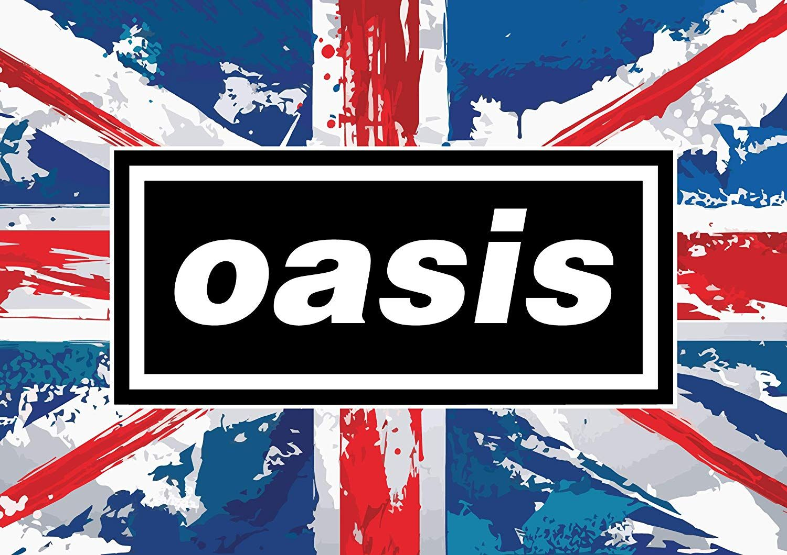

Biografi
Hai Lads,bertemu lagi dengan saya penulis Artikel yang bisa kalian lihat sendiri siapa yang menulis. Kali pertama saya menulis dan memposting mengenai band favorit jaman baheula haha,dan band ini menjadi salah satu hits untuk menuju sebuah gerakan permusikan yang mengguncang dunia setelah kematian Kurt Cobain vokalis nirvana pembawa gerakan musik Grunge yaitu Oasis yang menjadi motor pergerakan musik britpop di pertengahan hingga akhir tahun 1990-an atau disaat Band ini masih fenomenal di zaman-nya maka saya waktu itu sudah akan lahir disaat mereka terkenal. Kali pertama Oasis terbentuk yaitu pada saat Noel Gallagher kakaknya sang vokalis Liam Gallagher Masuk ke Band itu dan membuat banyak sekali demo untuk band yang baru pertama akan terkenal di Seantero UK dengan Hit Single Live Forever-nya ditahun 1994. Oasis adalah sebuah band yang bermarkas di Manchester dan membawa musik Manchester ke dimensi lain berkat Aksen manchester yang nyentrik dari sang vokalis Liam Gallagher ketika menyanyi diatas Panggung.
Saya sendiri menyadari bahwa saya sangat terlambat menikmati musik ini dan saya baru kenal dengan grup musik ini saat akan menamatkan kuliah,tapi ya lebih baik terlambat dari pada tidak tahu sama sekali tentang banyaknya referensi musik karena di Zaman ini perkembangan teknologi sudah semakin kencang dan kita sendiri bisa mengetahui mana selera musik yang pas untuk bisa dinikmati. Grup band ini sendiri akhirnya bubar sewaktu saya masih kelas 5 SD sekitar tahun 2009 dan saya tidak tahu siapa itu Liam Gallagher dan ya saya baru menyadarinya sekarang kalau dia itu masih fenomenal terutama di UK. Awalnya band ini bukan bernama Oasis melainkan The Rain dan diubah oleh Liam karena ada konsensus dengan Kakak-nya untuk bergabung bersama band dia di tahun 1991. Ya bisa disimpulkan kalau band ini secara resmi bernama Oasis pada tahun 1991 hingga Noel Gallagher Meninggalkan band itu di tahun 2009 dan berakhirlah Oasis karena secara kesepakatan jika salah satu dari kakak beradik Gallagher itu keluar maka Oasis bubar. Banyak anggota band keluar masuk tapi ya Grup band itu tetap menyisakan Liam Gallagher dan Noel Gallagher sebagai personil tetap Oasis,berikut anggota grup band oasis yang terdaftar mulai dari grup band tersebut berdiri hingga bubar :
Liam Gallagher
Noel Gallagher
Paul Arthur "Bonehead"
Paul McGuigan "Guigsy"
Tony McCarroll
Alan White
Gem Archer
Andy Bell
Zak Starkey
Chris Sharrock
Adalah salah satu vokalis yang menjadi pioner dalam pembentukan grup band Oasis. Salah satu elemen musik yang membuat Oasis begitu besar dalam waktu yang cepat di UK adalah pada warna suara Liam yang gamblang serta bergaya mendekati vokal Punk Rock dan kebetulan di masa itu media hingga warga UK sendiri membutuhkan suara kebebasan pada saat setelah Margareth Thacter sang perdana menteri Inggris yang diktator serta keras kepala terhadap Perubahan habis masa jabatanya di tahun akhir 1980-an atau awal 1990-an. Tapi ketika Band ini selalu melakukan tur keliling dunia setiap Tahun, Seiring waktu dengan gaya hidup yang bergaya Rock'n Roll serta jarang mendapatkan istirahat yang cukup akibat tur yang melelahkan secara fisik dan mental Liam tidak bisa lagi mencapai nada tertinggi saat menyanyikan beberapa Lagu Oasis sewaktu Awal Band ini berdiri. Liam sendiri menderita syndrom Hashimoto yang membuat seluruh elemen band harus menyesuaikan kesanggupan vokal Liam apalagi ketika menjalani tur keliling dunia setiap tahunya hingga band ini berakhir. Bisa dibilang masa jaya-nya Oasis dari popularitas didapat dari Suara Liam yang masih fresh mulai dari tahun 1991 hingga tahun 1999 sebelum terkena Syndrom Hashimoto yang menyerang vokalnya. Liam sendiri merupakan Adik Noel Gallagher yang berbeda usia 5 tahun,tapi dari sering beda ide hingga tabiat antar kakak beradik yang sering cekcok pada masalah sepele hingga penting membuat band selalu tidak stabil dan banyak personel yang akhirnya keluar masuk salah satu alasannya karena ketidaktahanan melihat kakak beradik ini sering cekcok entah itu masalah pribadi hingga merambah pada penyebab bubarnya band.
Bisa dibilang orang ini lah yang membuat band menjadi begitu besar mulai dari demo lagu yang banyak bertebaran di awal band berdiri hingga band berakhir bubar. Berposisi sebagai pemain gitar serta sebagai Leader Gitar membuat ego dari seorang Noel harus bersaing dengan ego sang Adik untuk membuat pengaruh yang berimbang di band. Noel membuat banyak sekali lagu bahkan dari Album Pertama hingga ketiga yang mengantarkan band ini menuju pemberitaan dunia hanya Noel lah yang mendapat Royalty paling besar di antara anggota band karena semua Lagu pada album tersebut dia sendiri yang membuat sebagian besar materi lagu. Hanya disempurnakan oleh beberapa vokal yang pas hingga suara bass,drum dan piano masterplan-nya dari beberapa hit oasis fenomenal berada pada pemikiran-nya. Tapi kalau lagu Oasis yang dia ciptakan itu dinyanyikan olehnya sering kali hanya melalui gitar akustik ciri vokal Noel ini bisa dapat feelingnya(pengecualian mungkin di lagu Don't Look Back In Anger yang menjadi salah satu hits lagu oasis yang paling laris & beberapa lagu B-side ciptaanya) oleh sebab itu dia butuh adiknya untuk membuat suara dominan band jadi lebih berkarakter Punk Rock hingga Alternative Rock. Band ini sempat mengalami stagnansi di awal perilisan album kelima dan ke-enam di awal tahun 2000-an ketika band masih mencari cara untuk menyesuaikan vokal liam yang terkena syndrom Hashimoto tersebut. Dan pada akhirnya ketika tahun 2005 mulai kembali muncul kepopuleran band tersebut,dan disaat inilah Noel dan Liam sering cekcok yang menyebabkan bubarnya band tersebut di tahun 2009 saat akan menggelar konser di Paris. Noel sendiri memang berkeinginan pergi dari band itu karena ia sudah menilai bahwa masalah pribadi yang seringnya dia bawa ke band hingga menyebabkan chemistry antar anggota band tidak harmonis seringkali membuat keadaan internal band menjadi tidak stabil dan Noel memutuskan keluar saja dari band tersebut disaat cekcok dia dengan Liam saat akan menggelar konser di Paris. Alasan dia keluar sendiri ialah pada saat cekcok Noel merasa akan dipukul oleh Liam dengan menggunakan gitar elektrik yang akan dipakai untuk konser karena itu adalah salah satu gitar elektrik kesayangannya,tapi sayangnya saat itu Liam sendiri mudah terpancing emosi oleh sang kakak karena ya Vokalis sendiri bisa bertindak di luar koridor dan Noel sekali lagi tidak care dengan kondisi Adiknya yang menderita syndrom itu. Noel Gallager sendiri pada akhirnya hiatus selama 2 tahun dari konflik di Paris itu dan membuat proyek band solonya dengan nama "Noel Gallaher High Flying Birds (NGHFB)" dan proyek solo band-nya masih bertahan hingga detik ini dan mengeluarkan beberapa album.
Ketika Chris Hutton vokalis The Rain dipecat, dia digantikan oleh Liam Gallagher, yang menyarankan band mengubah nama mereka menjadi Oasis. Gallagher dan Arthurs bekerja sama sebagai penulis lagu bersama. Namun, band ini masih tidak berhasil sampai Gallagher mendorong saudaranya Noel, yang baru saja kembali dari berkeliling dunia sebagai roadie untuk Inspiral Carpets, untuk bergabung dengan band. Noel membawa serta koleksi lagu yang akan membuat band terkenal. Arthurs mengingat lagu pertama yang dimainkan Noel Gallagher untuknya, "Live Forever" dan "All Around the World". Arthurs menangis dan menangis ketika Noel memainkan "Champagne Supernova" untuk band di bus tur mereka. Pada DVD Pasti Mungkin, dia mengatakan lagu Oasis favoritnya untuk dimainkan secara langsung adalah "Columbia", karena lagu tersebut hanya terdiri dari tiga akord yang menciptakan alur hipnosis.Ketika Oasis membawakan lagu "Whatever" di Top of the Pops, mereka menirukan dan salah satu pemain cello dari bagian string digantikan oleh Arthurs. Menjelang akhir lagu, dia mulai menggunakan busur untuk memimpin.
Arthurs adalah seorang multi-instrumentalis, dikreditkan karena telah memainkan piano dan mellotron di (What's the Story) Morning Glory? dan dapat dilihat di piano dalam video "Don't Look Back in Anger", serta gambar-gambar yang ditampilkan dalam buklet album Pasti Mungkin. Arthurs sebentar beralih ke gitar bass setelah Scott McLeod — yang menggantikan McGuigan sebelum dia yakin untuk bergabung kembali — berhenti di tengah tur AS tahun 1995 Oasis; dia muncul dengan band di Late Show dengan David Letterman bermain bass.Arthurs awalnya seharusnya menyanyikan vokal utama di (What's the Story) Morning Glory? vinil bonus lagu Bank Holiday Bonehead (dinamai menurut namanya). Setelah dia dan Liam Gallagher mabuk pada hari perekaman lagu, Noel Gallagher menyanyikan vokal utama sebagai gantinya. Vokal latar dari Arthurs dan Liam dapat didengar di trek.
Pada akhir 1980-an, McGuigan memulai sebuah band bernama The Rain dengan Paul "Bonehead" Arthurs pada gitar, Chris Hutton pada vokal utama, dan Tony McCarroll pada drum. Setelah Hutton dipecat, McGuigan mengundang teman sekolahnya Liam Gallagher untuk bergabung di vokal. Kakak Liam, Noel, kemudian bergabung dengan band sebagai gitaris dan penulis lagu utama, di mana mereka mengubah nama mereka menjadi Oasis. Meskipun bassis fungsional di atas panggung, bagian bass McGuigan kadang-kadang dimainkan oleh Noel di dua album pertama band. Meskipun ada desas-desus bahwa McGuigan tidak bermain bass di Definitely Maybe dan bahwa bagiannya dan Bonehead digantikan oleh Noel pada dua album pertama, ini telah dibantah oleh produser band Owen Morris. Seperti anggota band lainnya, McGuigan mengatakan dia telah merokok lebih sering serta menghisap banyak ganja selama tur.
McGuigan meninggalkan Oasis pada 1999 dan digantikan oleh mantan vokalis Ride dan gitaris Andy Bell sebagai bassis. Noel mengklaim bahwa McGuigan berhenti melalui faks dan menghindari panggilan telepon dari band pada minggu-minggu berikutnya. Meskipun dia akhirnya menyerah untuk mencoba menghubungi McGuigan, Noel mengatakan dia tidak menyimpan dendam. McGuigan sesekali tampil sebagai DJ. Dia menolak untuk tampil di DVD Definitely Maybe tahun 2004, meskipun surat sopan yang menjelaskan alasannya muncul sebagai tambahan tersembunyi dan ada juga segmen pendek yang menampilkan para pakar memberikan pandangan mereka tentang dia. Dia juga menolak untuk diwawancarai untuk film dokumenter Oasis: Supersonic 2016, meskipun rekaman arsip dirinya digunakan sebagai gantinya.McGuigan mengatakan tentang gaya permainannya pada tahun 1995, "Ketika saya pertama kali mulai, saya hanya memainkan senar atas dan bawah dari bass. Kalau dipikir-pikir, itulah yang masih saya lakukan sekarang.

McCarroll telah bertemu Paul McGuigan saat bermain untuk tim sepak bola lokal di usia muda. Bersama dengan teman McGuigan, Bonehead, mereka membentuk sebuah band bernama The Rain dan mempekerjakan Chris Hutton sebagai penyanyi mereka, tetapi dia dipecat dan digantikan oleh Liam Gallagher tidak lama kemudian, yang juga dikenal McCarroll sejak kecil. Liam memutuskan untuk mengganti nama menjadi Oasis, terinspirasi dari poster Inspiral Carpets yang digantung di kamarnya.Segera setelah itu, saudara laki-laki Liam, Noel, bergabung. McCarroll telah menyatakan dalam bukunya bahwa ia terlibat erat dalam penciptaan beberapa lagu Oasis, termasuk "Supersonic", meskipun Noel diberi kredit tunggal sebagai penulis lagu.
Noel dan McCarroll berhubungan selama masa kanak-kanak, tetapi ketika Oasis secara bertahap menjadi terkenal, hubungan antara keduanya terputus-putus. Noel telah berulang kali secara terbuka mengecam kemampuan drum McCarroll, mengatakan itu tidak cukup baik untuk single nomor satu.Pada hari terakhir April 1995, kepergian McCarroll diumumkan dan dia digantikan oleh Alan White, yang bertahan hingga 2004.Produser Oasis Owen Morris berkata tentang McCarroll, "Tony pendiam dan selalu sopan kepada saya, tetapi tampaknya tidak dalam dirinya... jadi saya pikir Tony melakukannya dengan baik untuk bertahan hidup selama dia melakukannya di Oasis". Morris menggambarkan gaya permainan drum McCarroll sebagai "sangat mendasar", tetapi dengan pengaturan waktu dan tempo yang "hampir sempurna secara autistik"
White menggantikan drummer Oasis asli Tony McCarroll pada April 1995 dan segera "dilemparkan ke ujung yang dalam", bergabung dengan band pada hari berikutnya untuk melakukan pemutaran "Some Might Say" di depan penonton TV nasional di musik lama BBC1 program Top of the Pops. Salah satu pertunjukan langsung pertama White dengan Oasis adalah di depan banyak orang di Festival Glastonbury pada Juni 1995.
Sampai kedatangan Andy Bell pada Musim Gugur 1999, White adalah tanda orang selatan di Oasis Mancunian. Awalnya dikenal sebagai 'Whitey', dia kemudian diberi nama ulang 'Dave' oleh band karena dia pernah menyajikan minuman untuk dirinya sendiri dari bar yang tidak dijaga, oleh karena itu menyerupai karakter Dave dari "The Winchester" di serial TV '70-an Minder. Noel Gallagher telah menyatakan bahwa White memiliki arti yang jauh lebih besar bagi band daripada sekadar sesi dan drummer tur, mengklaim bahwa dia sangat membantu dalam proses rekaman. Noel juga mengatakan bahwa ketika dia menulis sebuah lagu, dia akan memainkannya kepada White yang sering mengadaptasi ritme lagu atau memberi tahu Gallagher tentang kemungkinan perubahan tempo. Di sisi lain, produser Oasis Owen Morris menggambarkan White sebagai "pada dasarnya seorang drummer jazz" yang "selalu menyeret snare-nya dan tidak pernah memukul back beat dasar dengan cara rock and roll yang bodoh", merasa bahwa dia tidak mengerti suara Oasis dan juga McCarroll.
Meskipun Archer secara resmi disebut sebagai gitaris ritme Oasis, perannya di Oasis lebih dari itu. Dalam pengaturan live, dia dan Noel sering beralih antara lead dan rhythm guitar dan baik Noel dan Liam Gallagher memuji Archer atas kontribusinya di studio. Archer juga berperan sebagai penulis lagu. Kontribusi penulisan lagu pertamanya setelah bergabung dengan Oasis adalah "Hung in a Bad Place", yang muncul di album kelima Oasis Heathen Chemistry. Lagu ini diambil untuk digunakan dalam iklan untuk Victoria's Secret di AS. Perannya diperluas di album studio keenam Oasis, Don't Believe the Truth, yang menampilkan "A Bell Will Ring" dan "Love Like a Bomb" milik Archer, yang terakhir ia tulis bersama penyanyi Liam Gallagher. Dia juga menyumbangkan lagu B-side "Eyeball Tickler" dan "The Quiet Ones" – sebuah lagu akustik. Dia juga menulis "To Be Where There's Life" di album 2008 Dig Out Your Soul. Archer mengatakan bahwa dia merasa cukup sulit untuk mengirimkan lagu untuk dipertimbangkan ke band karena status Noel Gallagher sebagai penulis lagu, yang dia sebut sebagai salah satu penulis lagu favoritnya. Archer, dalam kesempatan yang jarang, menyumbangkan vokal latar untuk lagu-lagu Oasis, seperti pada "The Meaning of Soul", "Force of Nature", dan pada cover band dari The Who's "My Generation", memainkan piano di "Stop Crying Your Heart". Out" dan harmonika di "Mucky Fingers".
Andy Bell menyoroti pentingnya Archer bagi Oasis, dengan mengatakan, "Oasis telah sepenuhnya berevolusi. Teman lama Noel telah pergi, dia telah bercerai dan benar-benar mengubah hidupnya sendiri. Dia masih memiliki Liam tetapi hubungannya dengan Liam berbeda - itu lebih menggelora. Dia membutuhkan pasangan yang kurang ekstrim dan Permata itu. Permata membuat Noel kedinginan. Dan itu membuat Oasis menjadi kapal yang lebih stabil.Meskipun Noel Gallagher meninggalkan Oasis, Archer dan dia tetap berteman, dan bekerja sama untuk konser amal di Royal Albert Hall
Selama 1999 dengan Band Hurricane pada saat hiatus, Bell pindah dari Oxford untuk tinggal bersama istri dan putrinya di Swedia. Bell diundang untuk bergabung dengan Oasis karena mereka sedang mencari pengganti anggota pendiri Bonehead dan Guigsy. Pada menit terakhir Bell harus belajar bermain bass serta seluruh katalog Oasis sebelum pertunjukan Oasis pertamanya.
Saat bersama Oasis, Bell secara teratur membuat kontribusi penulisan lagu untuk band. Di Heathen Chemistry, Bell menulis lagu "A Quick Peep". Lagunya "Thank You For the Good Times" ditampilkan sebagai sisi-B dari "Stop Crying Your Heart Out" dari album yang sama. Di Don't Believe The Truth, ia menulis "Turn Up the Sun" (yang juga membuka setiap pertunjukan langsung di tur Oasis itu) dan "Keep the Dream Alive". Di Dig Out Your Soul, dia menulis "The Nature of Reality"

Selama tahun 2004, Starkey bergabung dengan band Britpop Oasis dan juga tampil di dua lagu yang termasuk dalam album biografi Who, The Who: Then and Now.Pada Mei 2005, Noel Gallagher mengungkapkan kepada BBC bahwa Starkey telah berpartisipasi dalam sesi rekaman untuk Don't Believe the Truth. Starkey telah merekam semua kecuali satu lagu dari sesi ini yang awalnya disebut "Mucky Fingers" dan juga untuk video promosi resmi untuk album tersebut.
Dia melakukan perjalanan sebagai pendamping di tur Oasis selama setahun yang diikuti dan muncul dalam video promosi untuk single terkait. Meskipun demikian, dia bukan anggota resmi band dan jarang muncul bersama mereka dalam promosi. Pada April 2005, Noel Gallagher menegaskan bahwa ia telah diundang untuk menjadi drummer resmi mereka dan menambahkan bahwa ini tidak dapat terwujud sebelum keterlibatan kerjanya saat ini dengan Who selesai pada pertengahan 2007. Mantan drummer mereka juga harus "dibayar" secara kontrak dari band. Pada 14 Februari 2007, Starkey muncul bersama Oasis ketika mereka menerima BRIT Award untuk kontribusi luar biasa pada musik.
Partisipasinya dalam pembuatan album Oasis, Dig Out Your Soul, dikonfirmasi pada 11 Desember 2007,ketika situs resmi Oasis menerbitkan foto dirinya bersama anggota band lainnya. Namun, diumumkan bahwa ia tidak akan tampil di Dig Out Your Soul Tour setelah berselisih dengan Noel Gallagher yang kemudian hengkang pada 2008 dan digantikan oleh Chris Sharrock. Setahun kemudian dia ingat bahwa bermain dengan mereka adalah "besar-besaran" dan menyebut band itu "beberapa musisi terpintar yang pernah saya temui"
Sharrock bergabung dengan Oasis pada 2008 setelah drummer sebelumnya Zak Starkey meninggalkan grup. Chris tidak bermain di album band tahun 2008, Dig Out Your Soul, tetapi bermain di tur berikutnya. Noel Gallagher mengatakan dalam sebuah wawancara untuk Mojo, mengenai penunjukan drummer baru Oasis, "Liam masih tidak senang dengan Chris Sharrock, karena dia adalah drummer Robbie Williams. Saya pulang dan memikirkannya dan itu terlalu berlebihan. godaan untuk membuat Robbie Williams dan Liam kesal dalam satu panggilan telepon." Sharrock melakukan debut live-nya dengan Oasis pada 14 Agustus 2008, di depan 150 anggota klub penggemar Oasis.
Sharrock menjadi terkenal di kalangan penggemar Oasis karena solo drumnya selama lagu "The Shock of the Lightning" yang dia tampilkan beberapa kali saat tur dengan Oasis selama 2008 dan 2009. Selain itu, dia terkenal karena trik flamboyannya dengan stik drumnya, termasuk memutar-mutarnya selama intro ke "Morning Glory" dan melemparkannya ke udara sesekali, sangat menyenangkan penonton.
Dalam sebuah wawancara yang diberikan selama tur Amerika Selatan tahun 2009 (diposting oleh Noel di Official Oasis Blog), Noel Gallagher, diminta untuk membandingkan kecakapan drum Chris Sharrock dan Zak Starkey, menyatakan bahwa mereka berdua sama. Starkey dan Sharrock memiliki sejarah yang sangat mirip, sangat sering mengambil alih satu sama lain; Sharrock adalah pendahulu Starkey sebagai drummer untuk Icicle Works dan Lightning Seeds.